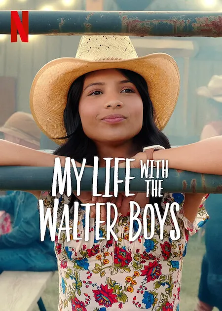

My Life with the Walter Boys
Sinopse
My Life with the Walter Boys é uma série dramática de televisão americana que estreou na Netflix
em 7 de dezembro de 2023. O drama da maioridade é uma adaptação do romance de Ali Novak de 2014,
com o mesmo nome, que foi publicado pela primeira vez no Wattpad. A série segue a recém-órfã
Jackie Howard (Nikki Rodriguez), uma adolescente de Manhattan que se muda para a zona rural do
Colorado depois de ser acolhida pelos Walters, uma família de sete filhos. A série foi
desenvolvida por Melanie Halsall. O elenco inclui Nikki Rodriguez, Noah LaLonde, Ashby Gentry e
Alisha Newton.Em dezembro de 2023, a série foi renovada para uma segunda temporada.

Elenco e personagens
Principal
- Nikki Rodriguez como Jackie Howard, uma garota de quinze anos que é forçada a mudar-se para
Silver Falls, Colorado, depois de perder toda a sua família num acidente de carro na cidade
de
Nova Iorque.
- Noah LaLonde como Cole Walter, um rapaz Walter que costumava ser uma estrela do futebol na
Silver Falls High School e parte de um triângulo amoroso com Jackie.
- Ashby Gentry como Alex Walter, um rapaz Walter que é um nerd estudioso e o outro lado do
triângulo amoroso com Jackie.
- Alisha Newton como Erin, quase namorada de Cole.
- Johnny Link como Will Walter, o filho mais velho do Walter, com formação superior e prestes
a
casar.
- Corey Fogelmanis como Nathan Walter, outro rapaz Walter que gosta de música.
- Sarah Rafferty como Dra. Katherine Walter, guardiã legal da Jackie, e que é veterinária.
- Marc Blucas como George Walter, o guardião legal da Jackie, que é fazendeiro.
- Connor Stanhope como Danny Walter, irmão gémeo fraterno de Cole que está a estudar
representação.
- Zoë Soul como Hayley Young, noiva de Will.
- Jaylan Evans como Skylar Summerhill, uma adolescente determinada em tornar-se na delegada de
turma, que se torna amiga da Jackie e é o interesse amoroso de Nathan.
Recorrente
- Alex Quijano como Richard, tio materno da Jackie.
- Myles Perez como Lee Garcia, primo dos irmãos Walter que mora com eles.
- Isaac Arellanes como Isaac Garcia, irmão de Lee que também mora com eles.
- Ashley Holliday como Tara, uma orientadora da Silver Falls High School que ajuda a Jackie e
é
amiga da Haley.
Além disso, Dean Petriw interpreta Jordan Walter, outro rapaz Walter, enquanto Lennix James é
Benny Walter, o rapaz mais novo dos Walter e Alix West Lefler é Parker Walter, a única
garota
Walter. Gabrielle Jacinto é Olivia, a melhor amiga de Erin. Mya Lowe é Kiley, a melhor amiga
de
Alex desde o jardim de infância. Nathaniel Arcand interpreta outro personagem recorrente,
Mato
Summerhill, que é o pai de Skylar e defende a sua herança das Primeiras Nações.
Episódios
Informações de Lançamento da Série
| Temporada |
Episódios |
Originalmente exibido |
| Estreia da temporada |
Final da temporada |
| 1 |
10 |
7 de dezembro de 2023 |
7 de dezembro de 2023 |
Lista de episódios da Série
| N.º |
Titulo |
Dirigido por |
Escrito por |
Lançamento |
| 1 |
"Welcome to Colorado" |
Jerry Ciccoritti |
Melanie Halsall |
7 de dezembro de 2023 |
| 2 |
"Live a Little" |
Jerry Ciccoritti |
Melanie Halsall |
7 de dezembro de 2023 |
| 3 |
"The Cole Effect" |
Nimisha Mukerji |
Jordan Ross Schindler |
7 de dezembro de 2023 |
| 4 |
"Nineteen" |
Nimisha Mukerji |
Jonathon Roessler |
7 de dezembro de 2023 |
| 5 |
"Thanksgiving" |
Jerry Ciccoritti |
Tawnya Bhattacharya & Ali Laventhol |
7 de dezembro de 2023 |
| 6 |
"Baggage" |
Jerry Ciccoritti |
Jesikah Suggs |
7 de dezembro de 2023 |
| 7 |
"Small Town Rumors" |
Winnifred Jong |
Kelsey Barry |
7 de dezembro de 2023 |
| 8 |
"Spinning Out" |
Winnifred Jong |
Teleplay por: Jonathon Roessler & Jordan Ross Schindler História por: Grace Condon
|
7 de dezembro de 2023 |
| 9 |
"Revolutions" |
Jason Priestley |
Tawnya Bhattacharya & Ali Laventhol |
7 de dezembro de 2023 |
| 10 |
"Happily Ever After" |
Jason Priestley |
Melanie Halsall |
7 de dezembro de 2023 |
Produção
Sony Pictures Television e iGeneration Studios estão a produzir My Life with the Walter Boys,
após a aquisição da Komixx Entertainment pela iGeneration Studios. Ed Glauser, que foi o
produtor executivo da série de filmes The Kissing Boot da Netflix, juntou-se à produção ao lado
da showrunner e produtora executiva Melanie Halsall.
As filmagens da série começaram em março de 2022, em Alberta, Canadá, e concluíram em setembro de
2022.
A produção da série ocorreu em Alberta, com filmagens nas cidades de Calgary, Cochrane e
Crossfield. Em 19 de dezembro de 2023, a Netflix renovou a série para uma segunda temporada.
A pré-produção para a segunda temporada começou em 27 de maio de 2024 e terminou em 19 de julho
de 2024; as filmagens para a segunda temporada começaram em 22 de julho de 2024 e concluíram em
7 de novembro de 2024. Em 18 de novembro de 2024, foi relatado que Natalie Sharp, Carson
MacCormac, Janet Kidder, Riele Downs e Jake Manley se juntaram ao elenco em papéis recorrentes
para a segunda temporada.
Antes da estreia da segunda temporada, em 14 de maio de 2025, a Netflix renovou a série para uma
terceira temporada. A pré-produção para a terceira temporada começou em 9 de junho de 2025 e
concluiu em 5 de agosto de 2025; as filmagens começaram em 6 de agosto de 2025 e estão
programadas para terminar em 1º de dezembro de 2025. Em 29 de julho de 2025, foi anunciado que
Chad Rook foi escalado para uma função recorrente na terceira temporada
Lançamento
A primeira temporada de My Life with the Walter Boys foi lançada em 7 de dezembro de 2023. A
segunda temporada foi lançada em 28 de agosto de 2025, com a terceira temporada a seguir em
2026.
Recepção
O site agregador de críticas Rotten Tomatoes registou um índice de aprovação de 40%, uma
classificação média de 5,1/10, com base em 10 resenhas críticas. O Metacritic, que utiliza uma
média ponderada, atribuiu uma pontuação de 50 em 100 com base em 6 críticos, indicando
"avaliações mistas ou médias".